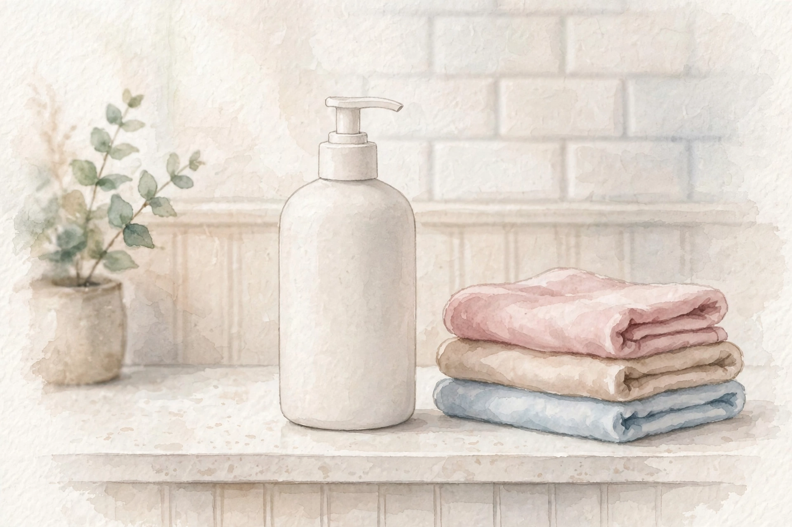
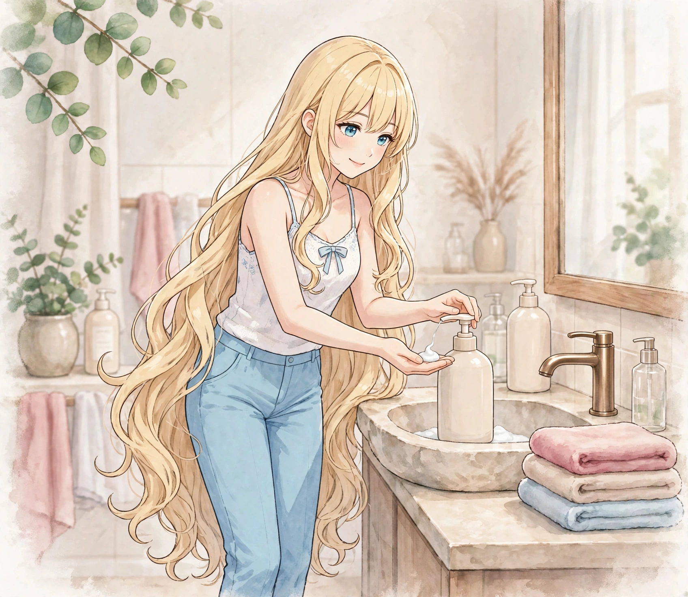

トップ ＞ ボディケア ＞ 家族でシェアする時の容器選びと衛生面
家族でシェアする時の容器選びと衛生面

ボディクリームやローションを家族で共有している家庭は多いと思います。共有は経済的ですが、容器の形によっては、衛生面や管理の面で工夫が要ります。この記事では、容器選びと運用のポイントを整理します。
分けやすいのは、ポンプとチューブ
共有に向くのは、ポンプ式とチューブ式です。中身に直接手が触れにくく、1回量もそろえやすい形です。ジャータイプを共有する場合は、手で直接取るのではなく、スパチュラ（へら）を使って取る運用にすると、衛生面の配慮ができます。スパチュラは、使った後に洗って乾かしておくこともあわせて習慣にします。
子どもと共有する場合は、そのアイテムの対象表示を確認してからにしてください。対象の範囲外の場合は、子どもの分を分けるのが基本です。
置き場所と、減り方の管理
共有のアイテムは、家族全員の動線が重なる場所（洗面所、浴室の出入り口など）に置くと、誰もが使いやすくなります。減り方は、共有だと読みにくくなるため、残量の見える容器を選ぶか、買い置きを用意しておくと、突然なくなる事態を防げます。
誰がどれくらい使っているかで揉めないためにも、「なくなったら買う係」を決めておくなど、運用のルールを簡単に決めておくと家庭内が平和です。
香りと感触の好みは、話し合って決める
共有の難しさは、好みの違いです。香りの強さや質感の好みが家族で分かれる場合は、共有は大きな面積の部位用に絞り、顔や手など好みの出やすい部位は各自の分を持つ、という分け方もあります。全部分けるか全部共有するかではなく、部位で分ける中間の形が、現実的な落としどころです。
容器の形、置き場所、部位での分け方。この3点を決めると、家族でのシェアは無理なく回るようになります。
衛生面では、手の清潔も基本になります。ケアの前には手を洗い、特にジャータイプから取る場合は、清潔な手かスパチュラを使います。家族の中に肌の調子の悪い人がいる時期は、その人の分を分ける、タオルやスパチュラを共用しない、といった一時的な分け方も有効です。浴室に置くアイテムは、水はねで容器の外側が濡れやすいため、定期的に外側を拭く習慣も、衛生を保つ助けになります。共有のルールは、家族で一度話し合って決めておくと、その後の運用が安定します。難しいルールではなく、「取る時はスパチュラ」「置き場所はここ」程度の、短い決め事で十分です。
共有のアイテムがなくなったときの買い替えも、ルールがあると揉めません。「残りが少なくなったら、気づいた人がメモに書く」といった簡単な決め事で十分です。家庭の運用は、完璧さより、誰もが分かる単純さが長続きします。

セラフィナ「共有はポンプとチューブが安心。ジャーはスパチュラで取る運用にしよう」